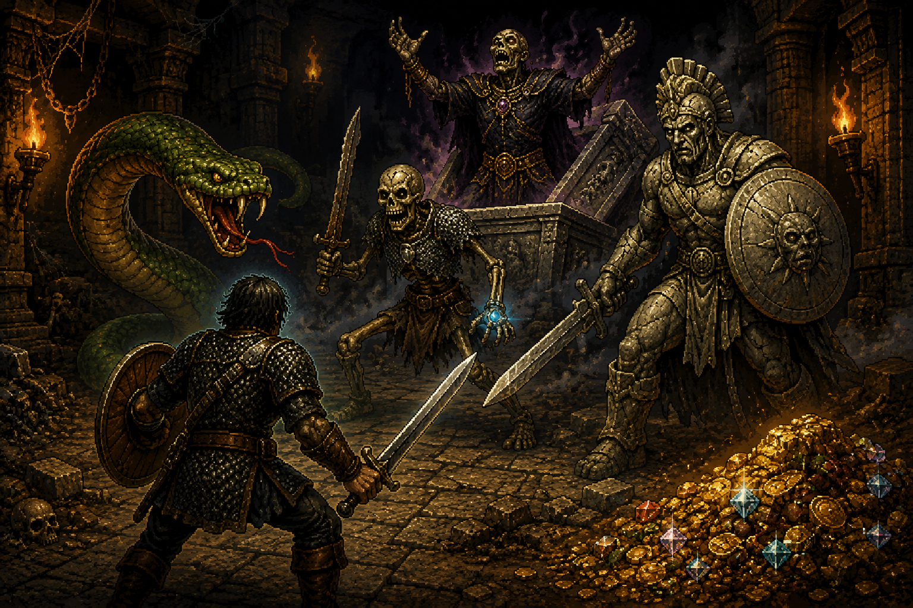

Mes jeux
- Reticuli
- Accessible Arena Strike (à venir)
- Vous êtes ici : Le tertre fistule

Site en construction : cette page sera enrichie progressivement.
Présentation du jeu
Le tertre fistule est un jeu vidéo sonore au tour par tour, jouable au clavier, avec une ambiance d'exploration de donjon.
Le jeu propose une quête complète composé de 4 mini-jeux. Le système reprend une version allégée du jeu de rôle Pathfinder 1 jusqu'au niveau 5. Des adversaires devront être combattus, des objets ramassés, une porte brisée et quelques fonctionnalités cachées qui peuvent rapporter un max de points d'expérience, utile pour combattre le boss final.
Le projet met l’accent sur les sons, la stéréo, les annonces vocales et une interface graphique synthétique, afin de proposer une expérience accessible aussi bien aux joueurs voyants que non-voyants.
Lien itch.io (à venir)
La page officielle du jeu sur itch.io sera indiquée ici.
mode d'emploi
à venir...
Chronologie
- Lundi 20 juillet 2026 à 22h11 : Le projet Le tertre fistule est achevé.